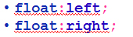
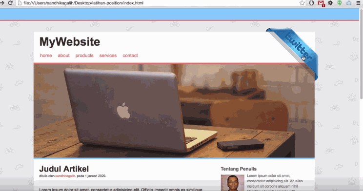

Sejarah Float
Dulunya, ketika para developers pertama kali melakukan transisi dari HTML layout berbasis tabel ke layout tanpa tabel, salah satu CSS property yang memberikan peran yang sangat penting, css property itu adalah float.
Untuk materi kali ini, kita akan membahas apa itu Float dan bagaimana float ini memberikan efek terhadap elemen.
Agar lebih memahami bagaimana float digunakan, silahkan amati gambar dibawah ini.

Pada print design, gambar pada halaman di-set sedemikian rupa sehingga teks/tulisan berada rapih disekitar gambar tersebut.
Pada web design, elemen halaman yang diberi properti CSS float berprilaku sama seperti gambar pada print design diatas.

Tujuan CSS Float
- Berfungsi untuk memaksa sebuah elemen menjadi berada di kiri atau dikanan halaman.
- Elemen yang berada setelah elemen yang diberi float akan terpengaruh fungsi float tersebut.
- Elemen yang berada sebelum elemen yang diberi float tidak akan terpengaruh.
- Property:

- Untuk me-nonaktifkan fungsi float gunakan:

Contoh Float Left
Contoh Float Right

CSS Float sebagai Struktur Halaman
Selain contoh-contoh diatas, float juga dapat digunakan untuk membuat struktur halaman seperti gambar dibawah ini:

Menghilangkan Float
untuk menghilangkan fungsi float pada halaman, gunakan property clear. Sebuah elemen yang diberi property clear tidak akan pindah posisi untuk mengisi kekosongan pada elemen diatasnya. Ilustrasinya dapat dilihat pada gambar dibawah ini:
Gambar diatas menunjukkan bahwa ukuran dari sidebar lebih kecil daripada lebar main content. Elemen footer dibawahnya melihat masih ada ruang kosong dibawah sidebar yang bisa ditempati, sehingga ruang kosong tersebut diisi oleh footer. Untuk memperbaiki masalah ini, digunakan sintaks berikut:
sehingga hasilnya seperti gambar dibawah ini:
Position
properti CSS Positioning membuat kita dapat memposisikan sebuah elemen. Itu juga bisa menempatkan sebuah elemen dibelakang elemen lainya, dan menentukan akan seperti apa konten dari sebuah elemen jika terlalu besar. Elemen bisa di posisikan menggunakan properti 'top','bottom','left' dan 'right' teman-teman bisa menggunakan properti tersebut dengan syarat sudah memberikan posisi dari sebuah elemen terlebih dahulu. properti tersebut juga akan memberikan efek yang berbeda pada tiap-tiap posisi, tergantung posisi apa yang akan kita gunakan. terdapat empat posisi yang akan kita pelajari.
Property position
- Static
- Absolute
- Relative
- Fixed
Bagaimana cara memberikan properti posisi terhadap sebuah elemen ?
Caranya sama seperti kalian memberikan properti css lainya.
position:value;
value diatas bisa berisi : Absolute, Relative, Fixed Atau Static.jangan lupa untuk mendefinisikan top,bottom, left dan rightnya jika diperlukan.
top:value bottom:value left:value right:value value diatas berisi nilai bersatuan px, misalkan 100px, 120px atau bisa juga menggunakan value negative -120px
Posisi Static


Posisi Relative
Elemen diposisikan secara relatif berdasarkan posisi awalnya. Posisi inilah yang sering digunakan, pada posisi ini kita bisa memanfaatkan properti top,left, bottom dan right. Objek akan berubah posisi terhadap elemen utama, dan juga relatif terhadap dirinya. jika elemen dengan posisi relatif kita geser, maka tempat asalnya akan tetap ada (berbeda dengan absolute / fixed, tempat asalnya hilang.


Hasil
Posisi Absolute
Elemen diposisikan didepan elemen-elemen HTML lain. Dengan menerapkan position:absolute, maka objek akan mengikuti parent (induk elemen) dengan catatan induk elemen harus menggunakan position:non-static (relative, absolute atau fixed).

Hasil
Posisi Fixed
Elemen diposisikan didepan elemen-elemen HTML lain, elemen tidak akan berubah meskipun kita melakukan scroll pada browser.


Hasil
z-index
Digunakan untuk mengatur urutan tumpukan pada elemen yang memiliki posisi selain static.

Latihan 5a
buka file .txt dibawah ini, lalu copy kan isinya dan simpan dengan nama:
L5a<NRP>.html>> download file latihan 5a <
Buatlah file css untuk menghias file html tadi dengan spesifikasi dibawah ini, simpan dengan nama:
L5a<NRP>.cssbody
- jenis font : georgia
- warna background: #F9FF9E
p
- Buat margin menjadi di tengah
id page-wrap
- lebar : 200px
- ? : 0 auto
- padding untuk ke-empat sisinya : ?
id content
- width : 46px
- margin kanan : 20px
- padding kanan : 20px
- border kanan (cari property yang tepat) : 1px
- border kanan (cari property yang tepat) : solid
- border kanan (cari property yang tepat) : #333
- tinggi minimal : ?
id sidebar
- lebar : 25px
id footer
- tipe paragraf : rata tengah
- warna background: #333
- jenis huruf : verdana
- warna huruf : putih
- lebar : ?
- tinggi : 40px
- margin atas bawah : ?
- margin kiri kanan : buat berada di tengah
- padding atas : 200px
sehingga hasilnya seperti ini.
Latihan 5b
modifikasi file html dan css pada latihan 5a, simpan dengan nama :
L5b<NRP>.htmlL5b<NRP>.css
modifikasi file css dengan spesifikasi dibawah ini:
- tambahkan properti float dengan value left untuk content dan sidebar
- buat kelas baru dengan nama clear dan isi atribut/propertinya dengan clear dan value both
sehingga hasilnya seperti ini.
Latihan 5c
modifikasi file html dan css pada latihan 5b, simpan dengan nama :
L5c<NRP>.htmlL5c<NRP>.css
modifikasi file css / html dengan spesifikasi dibawah ini:
Tambahkan kelas kotak pada file css dengan spesifikasi sebagai berikut:
- lebar : 8px
- tinggi : 10px
- margin : ?
- float : ?
tambahkan gambar untuk tiap-tiap div dengan kelas kotak, gambar dapat diambil di folder images/gallery pada modul.
Tambahkan pula div baru dengan nama kelas clear pada file html, simpan dibawah div dengan kelas kotak.
sehingga hasilnya seperti ini.
Latihan 5d
modifikasi file html dan css pada latihan berikut, simpan dengan nama :
L5d<NRP>.htmlL5d<NRP>.css
modifikasi file css / html dengan spesifikasi dibawah ini:
Tambahkan 2 buah div pada file html, letakkan dibawah div yang memiliki nama kelas clear.
beri kelas div tersebut dengan nama bg-kanan dan bg-kiri.
tambahkan kelas pada file css dengan spesifikasi berikut:
bg-kanan
- ubah lebar dan tinggi nya sesuai dengan ukuran gambar.
- gunakan background ini. (dapat diambil di modul di dalam folder gallery)
- tambahkan properti agar background tidak berulang (repeat)
- ubah posisi menjadi absolute
- bottom : ?
- right : 40px
- z-index : -99
- tinggi : 560px
- lebar : ?
bg-kiri
- ubah lebar dan tinggi nya sesuai dengan ukuran gambar.
- gunakan background ini. (dapat diambil di modul di dalam folder gallery)
- background-repeat: ?
- ubah posisi menjadi :?
- bottom : 0px
- right : ?
- tinggi : ?
- lebar : 700px
sehingga hasilnya seperti ini.
Latihan 5e
silahkan download latihan5e.txt , simpan dengan nama :
L5e<NRP>.htmlL5e<NRP>.css
modifikasi file css / html dengan spesifikasi dibawah ini:
tambahkan kelas pada file css dengan spesifikasi berikut:
Kelas login
- lebar: 280px
- tinggi: 250px
- warna background: ?
- margin: 0 auto
- posisi: relative
ghost
- width: 200px
- padding: 8px
- color: #fff
- border: 1px solid #fff
- text-align: center
- outline: ?
- margin-bottom: 10px
- font-size: 15px
- color: black
- cursor: hand
center
- margin: 0 auto
- lebar: 200px;
user
- lebar: 120px
- margin: 0 auto
user img
- lebar: 100px
btn
- lebar: 120px
- padding: 8px
- color: #fff
- border: 1px solid #fff
- text-align: ?
- font-size: 15px
- warna text: black
xbtn
- silahkan cari sendiri property apa saja yang diperlukan untuk bisa menghasilkan seperti gambar dibawah
login .xbtn img
- lebar: 30px
- border-radius: 100px
- border: 1px ? hitam
sehingga hasilnya seperti ini.
Tugas untuk dikerjakan dirumah
